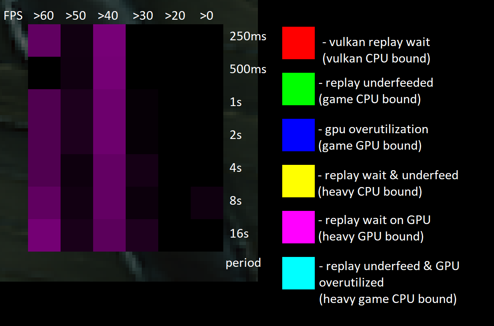

Performance Rating Statistics Panel
The Performance Rating Statistics Panel in Dagor Engine provides an analytical view of frame rate performance over multiple time periods, helping developers diagnose performance bottlenecks in their game. This visualization is crucial for identifying CPU and GPU limitations in both the game and replay systems.
Structure
The panel consists of a NxM grid of colored quads:
N represents different FPS groups (e.g., +60 FPS, 50-60 FPS, etc.).
M represents different averaging periods, with each period being twice as long as the previous one, starting from 250 ms.
Color Representation
Each cell’s brightness indicates the proportion of frames falling into a specific FPS group within a given period. The color identifies the primary bottleneck limiting the frame rate:
{kind=link}
| Color | Bottleneck Type |
|---|---|
| Red | Vulkan replay wait (Vulkan CPU bound) |
| Green | Replay underfed (Game CPU bound) |
| Blue | GPU overutilization (Game GPU bound) |
| Yellow | Replay wait & underfed (Heavy CPU bound) |
| Magenta | Replay wait on GPU (Heavy GPU bound) |
| Cyan | Replay underfed & GPU overutilized (Heavy game CPU bound) |
Usage and Analysis
Developers can leverage this panel to:
Detect whether performance limitations stem from CPU or GPU bottlenecks.
Identify if issues originate from the game itself or the replay system.
Evaluate performance trends over progressively increasing time periods.
Enable Panel
The Performance Rating Statistics Panel can be enabled via the ImGui overlay (Dear ImGui and ImPlot), providing an intuitive and real-time graphical representation of frame rate performance.